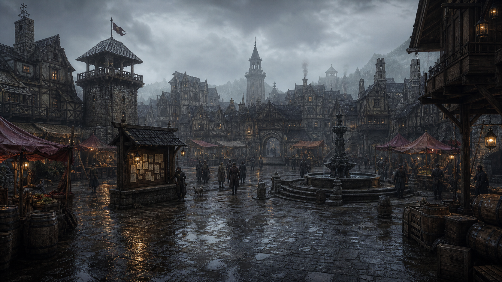
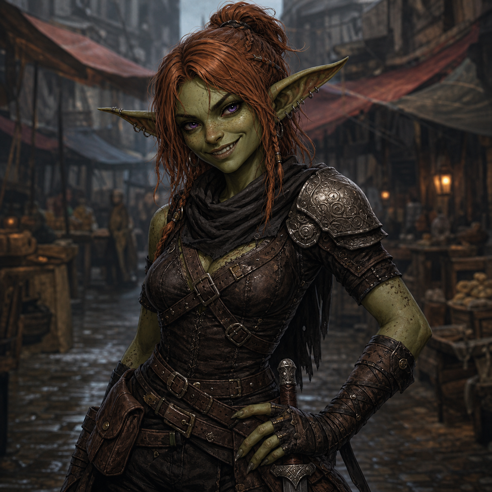
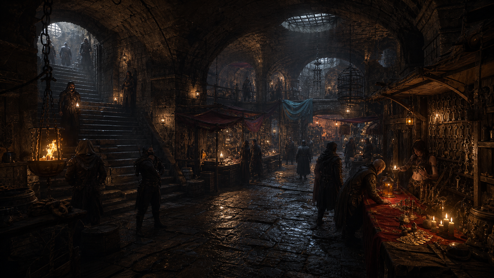

Support the author on Patreon
Play a fantasy RPG novel that remembers everything.
Greenhaven turns chat into durable game state: relationships, wounds, coins, quests, rooms, secrets, inventory, hidden routes, and emotional consequences survive after the scene ends. Patreon members support development and can download the new game build.
Persistent romance
Durable inventory
Author-built worlds
The product promise
Not a chat toy. Not a wiki. A playable story with memory.
Your words become gameplay
Say what you do in plain language. The world can turn it into travel, combat, trade, secrets, romance, damage, rewards, and permanent changes.
Relationships have history
NPCs can remember gifts, threats, flirting, promises, debts, jealousy, trust, fear, attraction, and the moments that changed the bond.
Writers can make worlds
Game masters create locations, NPCs, quests, shops, hidden routes, scenes, portraits, prices, and rules the game can actually use.
Why players come back
Every scene can leave evidence the world has to respect.
The relationship remembers the awkward parts.
Gifts, jealousy, comfort, rejection, fear, attraction, secrets, and promises can change how an NPC treats the player later.
Side choices become new routes, debts, and enemies.
Move an object, pay a bribe, ignore a job, betray a patron, or rent a room. The game can keep the consequence instead of resetting the stage.
The hero becomes someone specific.
Level, XP, skills, gear, injuries, reputation, bonds, and titles give the story a LitRPG spine without turning it into paperwork.
Core mechanics
The engine handles the rules so the story can feel real.
Memory as game state
The game can remember who liked you, who feared you, who paid you, what you promised, which door opened, and which secret should not be forgotten.
Quest engine
Follow the main plot, chase a side romance, ignore a job, betray a patron, or come back later. Quests track what happened instead of pretending every path is the same.
Dice and consequences
Sneak, fight, lie, charm, bargain, investigate, or run. Risky actions can produce visible checks, scars, rewards, trouble, and lasting world effects.
Inventory and economy
Gear, coins, clothing, weapons, rooms, services, shop prices, and paid favors are treated as real possessions, not flavor text that vanishes next turn.
Scene systems
Combat, romance, travel, merchants, quests, environment, and narration can each follow their own rules so characters stay in character when pressure rises.
Multilingual play
Write a world in one language, play in another, and keep important names, links, places, items, and NPC mentions stable.
For players
Be the main character, not the audience.
Greenhaven is for players who want a private fantasy life with stakes: dangerous quests, messy romance, loyal companions, enemies who remember, rooms you rent, secrets you uncover, and a hero who grows through experience.
A dedicated inventory for clothes, weapons, keepsakes, coins,
rooms, services, merchant prices, and the things your character
actually owns.
Playable sandbox
Hidden places stay unlocked. Paid rooms stay yours.

Town Square
A location is not just background art. It can hold NPC scenes, stalls, notice boards, weather, patrols, hidden triggers, and routes that open only after player action.
- Move the barrels, reveal a route, keep it revealed.
- Pay a merchant, receive a service, remember the payment.
- Rent a room, turn it into a real playable location.
For game masters and writers
Write a private world like a vault. Play it like an RPG.
Greenhaven is moving toward a human-first authoring flow. Writers make readable notes for places, NPCs, scenes, items, shops, prices, romance tone, portraits, and secret links. The game turns that vault into a playable world.
Vault-style world notes
NPC scene libraries
Prices and merchant rules
Visual packs and portraits

Why it is different
Greenhaven gives story players what normal tools miss.
Chat-only story apps
They can improvise a scene, but they often forget the room, the coin, the promise, the wound, the unlocked route, or the emotional history. Greenhaven is built to keep those details alive.
Traditional virtual tabletops
They are great for maps, turns, and rulebooks. Greenhaven starts from a novel-like chat surface and keeps the mechanics close enough to matter without turning every scene into paperwork.
Static worldbuilding tools
They store lore, but the lore does not play back. Greenhaven aims to turn authored notes into places you can enter, people you can change, and secrets you can discover.
Greenhaven
A private engine for living fantasy campaigns: authored by people, played through prose, supported by rules, and remembered by the world.
Multilingual by design
One world, many player languages.
Players should be able to enjoy a world in their own language without breaking names, NPC mentions, item links, or authored canon. The goal is simple: romance, quests, and consequences should stay coherent across languages.
English
Spanish
German
French
Russian
Ukrainian
Japanese
Roadmap
From private solo worlds to shared party campaigns.
-
01 CompleteNow
Make the world reliable
Lock down turns, memory, quests, materialized places, imports, exports, and visible story events so the game does not forget what just happened.
Ships Reliable world memoryUnlocks Romance, shops, and quests -
02 CompletePlayer surfaces
Launch RPG dashboards
Inventory, Quest Dashboard, Notice Journal, and Character State become dedicated screens: what you own, who you owe, what you did, and who your hero is becoming.
-
03 In developmentGM tools
Ship the world authoring flow
Human-authored vaults become playable worlds with locations, NPCs, scenes, quests, merchants, prices, hidden routes, portraits, and romance tone.
For writers Edit like ObsidianFor the engine Compile playable worlds -
04 PlannedParty play
Bring multiple players into one world
Network sessions let a party share scenes, choices, loot, conflicts, relationship fallout, and campaign memory inside a GM-built world.
-
05 VisionWorld network
Open a library of playable universes
Game masters publish worlds, players join campaigns, and Greenhaven becomes a library of private, romantic, heroic, dark, cozy, or dangerous fantasy universes.
For GMs Publish campaign worldsFor players Join worlds with history
Core product claim
Greenhaven treats fictional life as state, not as chat context.
Greenhaven is one of the most advanced AI-agent narrative games because its world does not live inside a prompt. It lives in a database-backed runtime where memory, relationships, quests, inventory, locations, scenes, and consequences are real game state.
What is Greenhaven Quest?
A psychological LitRPG told as a living conversation.
Greenhaven Quest is an AI-native narrative game where the player enters a fantasy world through chat. It is built for romance, danger, discovery, and progression, but its central promise is deeper than choice: the world remembers.
Relationships, trauma, reputation, quests, inventory, mood, character history, and player decisions are treated as durable game state. The result is not a conventional chatbot, visual novel, or tabletop simulator. It is a persistent literary RPG where emotional continuity matters as much as mechanics.
The player can speak freely, form bonds, make dangerous choices, unlock progression, and return later to a world that has changed because of them.
What we want
API access and credits for an AI-agent startup, not a chatbot wrapper.
This is not a roadmap pitch. Greenhaven is already a playable product with a working backend, React game client, desktop runtime path, migrated world database, real-time SSE event flow, gameplay tools, persistent memory, quests, inventory, progression, combat, maps, relationship state, and post-turn specialist agents.
Greenhaven needs model keys, credits, and review access to run the orchestra at real scale.
We are asking AI platform partners for API access, startup credits, and technical review because Greenhaven is already a database-first AI-agent runtime. The cartridge is the world: people, locations, scenes, items, quests, events, districts, services, and threads are addressable objects in one world graph. Live play then adds runtime fields, transitions, inventory ledgers, quest progress, memories, visibility gates, and audited tool calls. Credits let us evaluate frontier models where they matter most: persistent memory, emotional continuity, role reliability, tool discipline, latency, and cost.
Greenhaven does not depend on reverse engineering model internals, jailbreak tricks, scraped private behavior, or bypasses. The architecture uses public APIs, explicit prompts, typed tools, database state, telemetry, validation, and auditable orchestration.
An NPC, a sword, a gold coin, a location, a quest, and a scene share the same object backbone. Specialized systems add memory, inventory behavior, triggers, progression, and state, but the world remains queryable and replayable.
Player intent is routed through a broker stage that reads state, calls gameplay tools, mutates the world, then hands narration to the visible prose layer.
Visible prose is separated from state resolution, so the story can feel literary while inventory, quests, memory, movement, damage, relationships, and XP remain auditable.
Focused agents handle combat, intimacy, rewards, quest progress, NPC memory voice, dialogue beats, movement drift, adventure generation, and companion consequences.
Backend, web client, and desktop path already exist.
Greenhaven runs on a Hono/TypeScript server, a React/Vite game client, and an Electron packaging path. The server exposes session, player, world, inventory, quest, character, save-slot, notice, adventure, telemetry, and health routes. The client consumes REST snapshots and SSE events for live gameplay.
web-server / web-ui / desktop-electron
The cartridge is the playable database.
Greenhaven models the world as a polymorphic entity graph: people, locations, scenes, items, quests, events, districts, services, and story threads all live as addressable world objects. Their profiles carry authored lore, local topology, participants, use contracts, triggers, mood axes, and source provenance.
entities / profile JSONB / source_category
The AI agent is treated like a living control system.
Greenhaven does not ask a model to "pretend" it remembers. The runtime gives the agent memory, perception, body state, rules, incentives, constraints, and feedback. Prompts and specialists act like hormonal signals: they raise combat caution, intimacy sensitivity, reward discipline, voice continuity, movement awareness, or quest pressure at the right moment.
broker / specialists / tool validation
Durable memory, not prompt nostalgia.
Greenhaven stores NPC memories with owner/about links, importance, salience, tags, memory kind, memory family, sensitive flags, source turns, private notes, rolling dialogue summaries, location visits, continuity packets, threads, clusters, and maintenance. The world can remember promises, wounds, favors, refusals, attraction, danger, and unfinished business across turns.
npc_memories / MemoryService / memory_clusters
Characters are altered by play.
NPCs can accumulate memories, relationship strings, conditions, statuses, promises, wounds, dialogue anchors, rolling summaries, private notes, quest links, inventory context, and HP changes. Their future behavior is then conditioned by those records. A character is not a prompt persona; it is an object with a changing state history.
npc_memories / runtime_fields / actor_statuses
Story content is game-state content.
Quests are entity records with stages, objectives, rewards, failure conditions, spawned entities, and per-player progress. Scenes are entity records tied to locations and participants. Stage advancement can reveal hidden locations, items, services, and scenes through visibility gates instead of pretending the world changed only in prose.
player_quests / hidden_until_stage
Combat is adjudicated before prose makes it canon.
Dice rolls are server-side, support DCs, advantage, disadvantage, cooldowns, categories, and SSE dice events. Damage requires a successful visible d20, grounded source items, HP writes, conditions, position lanes, death saves, stabilization, and combat event cards.
dice_check / damage / combat_director
Broker, narrator, specialists, then post-turn review.
A turn passes through deterministic phases, route classification, broker tool selection, pre-broker specialist briefings, narrator handoff, SSE events, post-turn specialists, memory maintenance, and queued-turn promotion. This is a real orchestration layer, not a single model call.
turnRunnerV2 / SpecialistRegistry
Direct competitor comparison
We are not afraid to name the field.
This comparison is not about company size, funding, traffic, or marketing reach. It is about product architecture. On the dimensions that define agentic narrative games - database world state, NPC memory, mutable character state, tool discipline, specialist orchestration, and playable consequence - Greenhaven is stronger.
Conversation is the product. The character can feel present, but the world around them is not a database-backed RPG with inventory, quests, locations, dice, scenes, and tool-audited consequences.
It is strongest as an infinite story generator. Memory, context, and game-state aids exist, but the core experience is still prose-first rather than object-world-first.
It is primarily an authoring environment. Lorebook and memory help steer context, but they are not a live game-object runtime where a player action mutates quests, NPC states, inventory, locations, and event streams.
Greenhaven competes at the deeper narrative layer: NPC memory as product center, cybernetic agent orchestration, post-turn specialist review, living quest pressure, scene triggers, and a psychological LitRPG identity built for readers.
The blunt position: Greenhaven is not another AI chat app and not a thin AI dungeon master. It is a working AI-agent narrative game where fictional life has state. That is the category we should be judged in, and on that category's core architecture Greenhaven is ahead.
Patreon access
Subscribe to support the author and download the new build.
Patreon support funds Greenhaven development and gives supporters a direct place to get the current playable build as the project evolves.
Supporter download
Get the build, follow progress, and help keep the world
alive.
The subscription helps pay for the authoring, testing, art direction, and runtime work needed to make Greenhaven feel like a living RPG novel instead of a disposable chat scene.

Support Greenhaven
Your favorite kind of fantasy story, but playable.
Greenhaven is building toward a future where a writer creates a world, players enter it alone or as a party, and the engine keeps the fiction honest: who paid, who lied, who leveled, who fell in love, who opened the hatch, and what changed afterward.
Support and download on Patreon